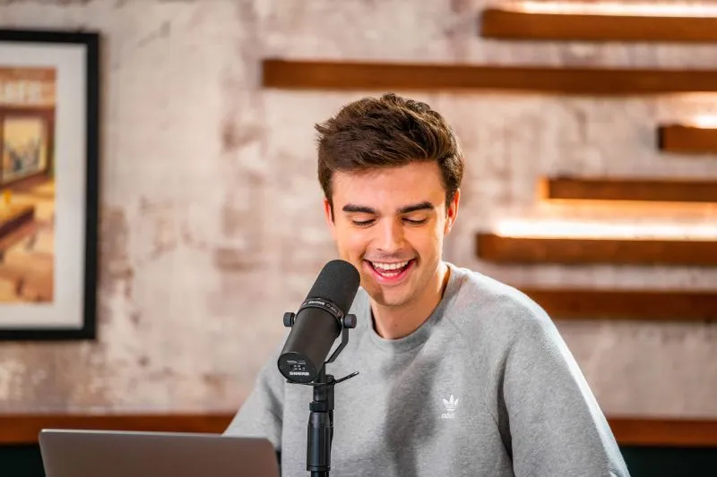
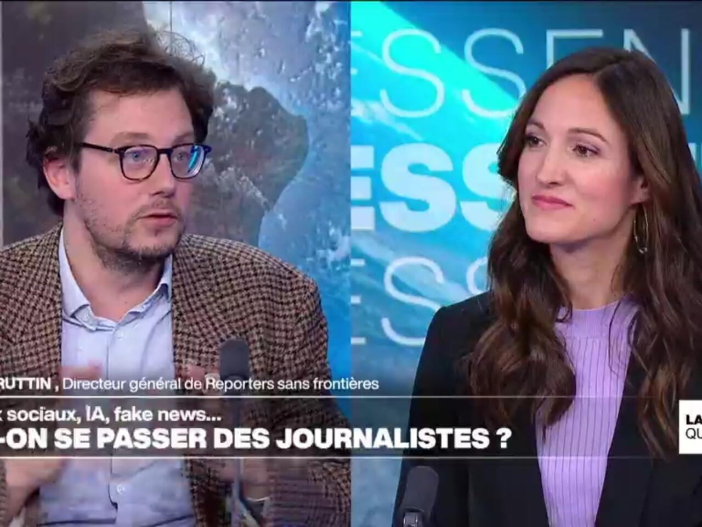

“Does information still belong to journalists?”
On TikTok, Instagram, and YouTube, influencers now broadcast live news, short analyses, and instant reactions. In 2025, this new way of consuming information is disrupting traditional media.
From Paris to New York, the line between journalism and influence is becoming increasingly blurred. Social media platforms have become full-fledged information channels, competing directly with newspapers, television, and radio.
Influencers are no longer just entertainers; they inform. During protests, natural disasters, or elections, many post short videos or news summaries followed by millions of viewers.
One of the most well-known examples is Hugo Travers, founder of the Hugo Décrypte channel. Every day, he presents key news stories on YouTube, TikTok, and Instagram. His concise and accessible format appeals to younger audiences, often disconnected from traditional news sources. However, these short summaries tend to simplify complex issues, offering limited depth and analysis.
click on the video below
According to a Pew Research Center study, 53% of young adults aged 18–30 get their news primarily from social media, often from non-professional creators. “Viewers trust familiar faces, but not always reliable sources,” said Lena Cruz, professor of media ethics at the University of Madrid.
Journalists, in contrast, emphasize rigor, cross-checking facts, citing sources, and providing context. The rise of “info-influencers” raises a key question: can someone inform without journalistic training?
For more insight on the changing media landscape, see Thibaut Bruttin, Secretary-General of Reporters Without Borders, discussing the obsolescence of traditional media on France 24.
click on the video below
Some media outlets are now partnering with content creators to reach younger audiences. France Télévisions and Brut, for example, collaborate with influencers to adapt their content for social platforms. Other professionals fear this approach could undermine the credibility of journalism.
Several universities have also launched training programs to teach creators the fundamentals of journalism, fact-checking, and editorial responsibility.
Journalism is evolving, balancing expertise with immediacy, and seeks to remain a trusted reference in a media environment dominated by algorithms. Ultimately, the challenge may not be to choose between influencers and journalists, but to ensure the reliability and diversity of information sources.